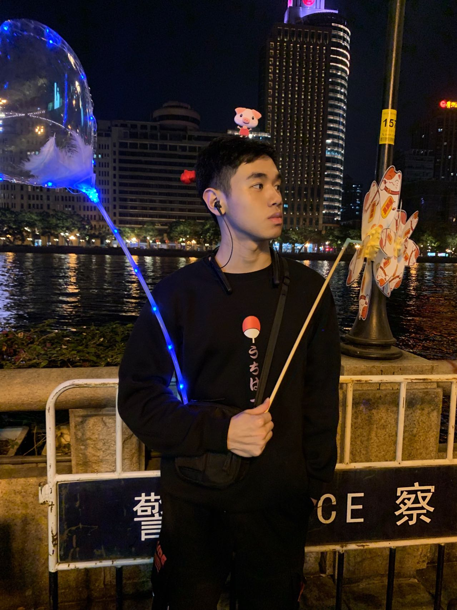
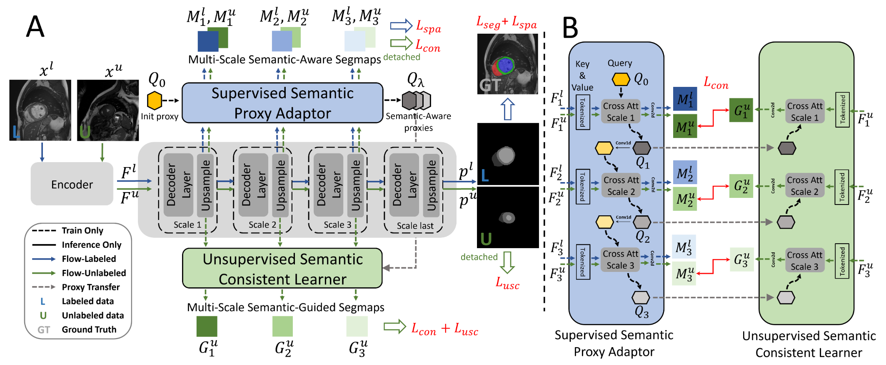
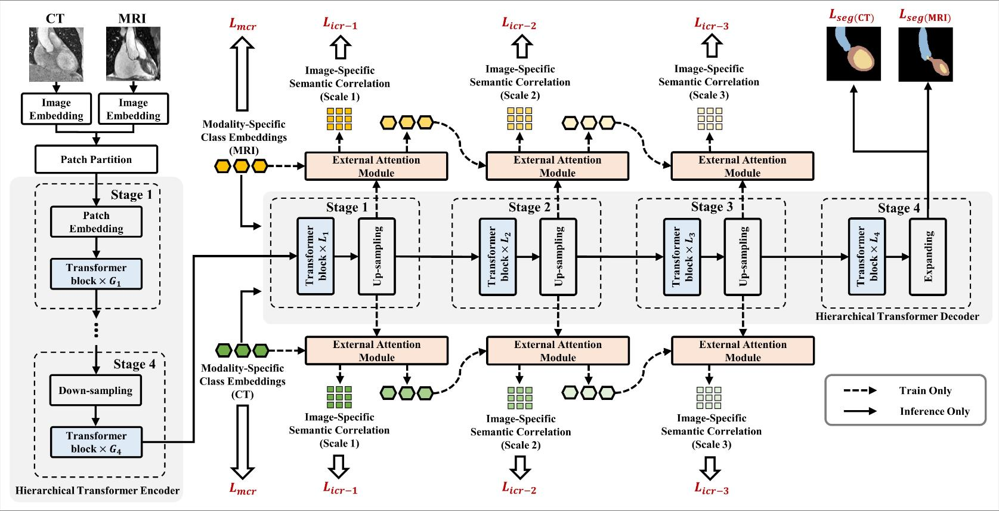
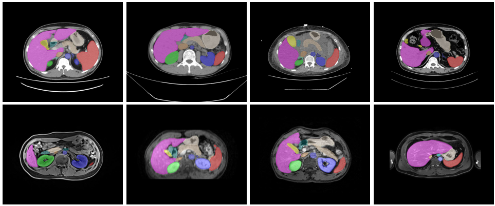
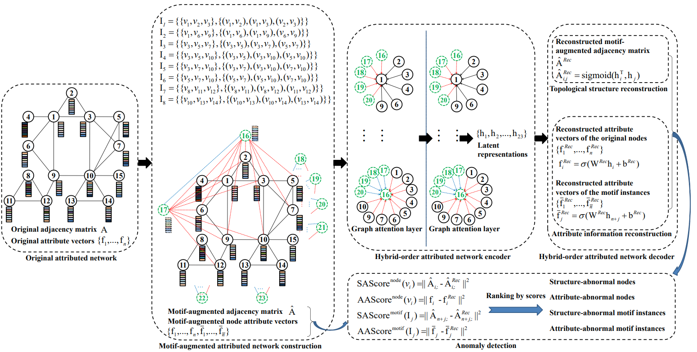

Ye ZhuResearch Assistant
School of Data Science
|
 |

Biography [ CV ]
I am currently a research assistant in the School of Data Science, The Chinese University of Hong Kong, Shenzhen, supervised by Prof. Ruimao Zhang. Previously, I received the B. Eng degree from College of Mathematics and Information, South China Agriculture University in 2021.
My research interest lies in deep learning and computer vision, including scene understanding, semi supervised learning, and medical image analysis.
News
- [10/2021] I gained employment at the Chinese University of Hong Kong (Shenzhen) as a research assistant.
Selected Publications [Google Scholar]
|  | Inherent Consistent Learning for Accurate Semi-supervised Medical Image Segmentation Ye Zhu, Jie Yang, Siqi Liu, Ruimao Zhang*. Medical Imaging with Deep Learning (MIDL), 2023. [paper](accept, Oral) |
|  | Toward Unpaired Multi-modal Medical Image Segmentation via Learning Structured Semantic Consistency Jie Yang, Ye Zhu, Chaoqun Wang, Zhen Li, Ruimao Zhang*. Medical Imaging with Deep Learning (MIDL), 2023. [paper](accept) |
|  | AMOS_A Large-Scale Abdominal Multi-Organ Benchmark for Versatile Medical Image Segmentation Yuanfeng Ji, Haotian Bai, Jie Yang, Chongjian Ge, Ye Zhu, Xiang Wan*, Ping Luo* and Ruimao Zhang*. Proc. of Conference on Neural Information Processing Systems (NeurIPS), 2022. [paper](accept, Oral) |

|
Toward Clinically Assisted Colorectal Polyp Recognition via Structured Cross-modal
Representation Consistency Weijie Ma, Ye Zhu, Jie Yang, Yiwen Hu, Zhen Li, Li Xiang and Ruimao Zhang*. Medical Image Computing and Computer Assisted Interventions (MICCAI), 2022. [paper](early accept) |
|  | Hybrid-Order Anomaly Detection on Attributed Networks Ling Huang, Ye Zhu, Yuefang Gao, Tuo Liu, Chao Chang, Caixing Liu, Yong Tang and Chang-Dong Wang*. IEEE Transactions on Knowledge and Data Engineering (TKDE), 2021. [paper](early accept) |
© Ye Zhu | Last updated: May 2022